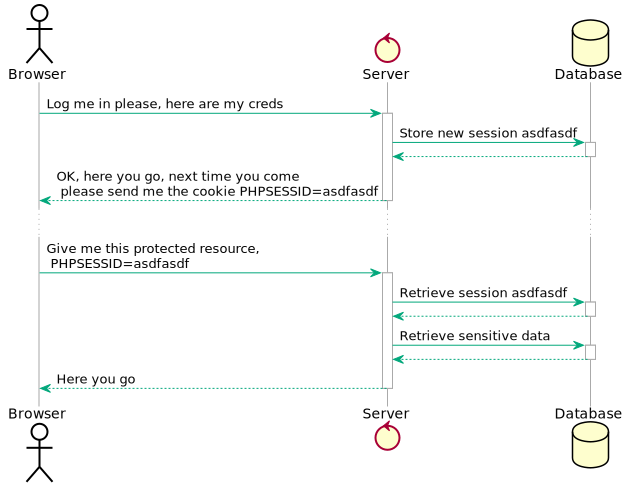
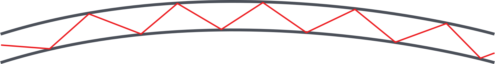
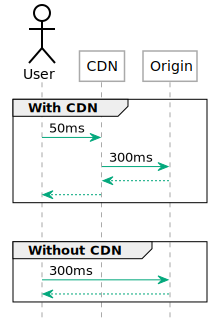

Beyond IaaS
This lecture walks you through the most important services offered by cloud providers beyond the IaaS layers. Sometimes this is called "PaaS" (Platform as a Service) indicating that it is intended as a developer platform.
The easiest way to remember the difference is that IaaS offers virtual machines and connected services. In order to operate on top of an IaaS platform you need someone skilled in running an operating system. In other words, you need a system administrator.
PaaS on the other hand is intended for developers. The main goal of PaaS services is enabling developers to deploy applications without having to manage the operating system of the underlying virtual machine.
There is, however, nothing preventing you from mixing IaaS and PaaS services. A typical use case would be using a managed database with virtual machines. This helps smaller teams because operating a database proficiently on a small scale can be an undue burden.
This might not seem like a big deal but consider that databases store data. Every time when data storage is concerned disaster recovery becomes more complex. If an IaaS team were to operate a database themselves they would need to regularly test backups and disaster recovery procedures. Managed databases take that complexity away.
Similarly, building a redundant database system that can perform an automatic failover requires a high skill level in managing that specific database engine. This skill level may not be available in small teams, or a small team may not want to spend time on managing the database instead of focusing on their core objective.
Application load balancers#
Application load balancers provide load balancing capabilities on layer 7 of the OSI-model. In practice application load balancers on offer support HTTP and HTTPS load balancing.
HTTP is a request-response protocol. Typically connections are short-lived but longer connections (e.g. with Websockets) are also possible. Good application load balancers allow sending traffic to a different set of backends based on the host name (example.com) as well as the path (/some/address).
Some applications also require that subsequent requests from the same client end up on the same backend. This is called session stickiness and can be achieved in a variety of ways. Less advanced solutions route requests based on the source IP, while more advanced versions send a so-called cookie to the client and route subsequent requests based on that cookie.

Sticky sessions, however, present a problem: when a backend goes down the users of that backend will be redistributed to other backends. In practice this usually means that users will be logged out. When a cascading fault, or a rolling update occurs that takes down multiple backends in rapid succession users can be subjected to multiple involuntary logouts.
This has an adverse effect on user experience which is why newer, so-called “cloud native” applications don't use sticky sessions. Instead, cloud native applications put client-specific data (e.g. session data) in database systems with redundancy. Sessions themselves have their own race condition problems, but that is not a discussion for this lecture.
Content Delivery Networks (CDNs)#
While it seems the Internet is blazing fast nowadays delivering content to the other side of the planet is still an issue. As you may know most of the Internet is comprised of fiber optic cabling. Data is transmitted by turning a laser on and off in rapid succession.
Let's do a little mental exercise: the speed of light is 299.792.458 m/s. The radius of our planet is 6.371 km. A ray of light should be able to round the planet in 6.371.000 / 299.792.458 = 0.021 seconds. In other words any data transmitted should be able to travel around the world in ~21 milliseconds. Yet, in practice we see latencies upwards of 100 ms when transmitting data from Europe to India.

The issue is that light does not go “around the corner”. Fiber optic cables work by having reflective walls so the light bounces off the walls repeatedly to reach the end. This multiplies the distance light has to travel to reach the other side of the planet. This is further compounded by the fact that light can only travel so far in a fiber optic cable, repeaters and routers in between also need time to process the data.
The problem is further compounded by how HTTP works. When a website is loaded there are several elements that have to wait for each other. The website may reference a style sheet (CSS file), the CSS file may reference an image and so on. This means several round trips have to be done to build a page. HTTP/2 server push attempts to mitigate this.
CDN's work around this problem by replicating content to servers closer to the users. When a user requests a certain file that request lands on the CDN's edge node first. If the CDN has the file in the cache the delivery is very fast. If, however, the CDN does not have the content in cache the delivery will take longer.

In essence, CDN's help with latency issues if the content can be cached. in other words, this helps mostly with static content, but in combination with functions as a service (see below) dynamic content can also be delivered from edge nodes to some extent.
Did you know?
Low latency connections are important not just for delivering content. Stock exchanges benefit from very low latencies. For example, there is a private microwave network between Frankfurt and London that has twice the speed of the public internet.
Did you know?
SpaceX is building the Starlink network to provide lower latency connectivity across the globe.
Object Storage#
In the previous lecture we briefly mentioned object storages. As a reminder, traditional block storage devices and the filesystems implemented on top of them have several features you may consider advanced:
- Multiple programs can open the same file in parallel,
- Files can be read and written partially,
- Locks can be placed on files preventing other processes from accessing them.
Object storages are different. The most popular Amazon S3 protocol offers the ability to up- and download, list and delete files. However, files can only be uploaded as a whole, partial reads or writes are not possible. Consistency is also not guaranteed when multiple programs are accessing the same files in parallel.
However, due to the limited featureset object storages have a few unique abilities not afforded by traditional block storage:
- They are redundant over multiple servers by design. The loss of a single physical machine does not mean a data loss.
- The S3 protocol offers the ability to place ACL's (access control lists) on the objects uploaded to the object storage. This allows making files publicly accessible over the web without needing to maintain a server.
- Some object storage implementations offer the ability to keep multiple versions of files. Clients can be prevented from deleting older versions making versioning an effective data loss prevention mechanism.
- Some object storage implementations offer the ability to lock files from being modified in the future. This is especially important when adhering to corporate or government data retention requirements.
Cold storage#
Some providers offer an extension to their object storage system that puts data in cold storage (e.g. on tape). Data can be uploaded directly via the API, or in the case of very large data amounts shipped to the provider on hard drives.
Did you know?
“Never underestimate the bandwidth of a truck full of hard drives.” — is an industry saying that kept its validity to this day.
Since the data is stored on offline (cold) storage the data retrieval is not as immediate as with the object storage. To retrieve data from cold storage you often need to wait several hours until the data becomes available. Therefore, an effective backup strategy to the cloud often involves moving data to the object storage first and only older backups to cold storage. Amazon, for example, allows for automating this process using S3 lifecycle rules.
Databases as a Service (DBaaS)#
As mentioned before, one of the most difficult services to operate are ones that store state. They are also highly standardized between cloud providers. This makes them an ideal candidate for a company to use PaaS instead of managing everything in-house.
Database consistency#
When considering which database offering to use database consistency plays a key role. It is a common occurrence that startups pick, for example, MongoDB because of its “hipness” instead of it considering the benefits and drawbacks of this (or any other) database solution.
One of the important aspects of databases is the way they offer consistency. Traditional SQL-style databases often supports what's called ACID-compliance. This stands for Atomicity, Consistency, Isolation, and Durability.
- Atomicity guarantees that series of database operations will either occur as a whole or not at all. The practical implementation of atomicity are transactions.
- Consistency guarantees that if an operation would violate the rules of a database (whatever they may be) the whole transaction is rolled back to a previously known good state.
- Isolation guarantees that two transactions executing at the same time will not affect each other. While this can be turned on it is very resource intensive and database engines often allow for a lower isolation level to increase performance.
- Durability guarantees that, if a user has received a success message the data is actually stored. This guarantee is not met by most NoSQL databases.
In contrast, most NoSQL databases implement BASE:
- Basic Availability guarantees that the database is available most of the time.
- Soft-state allows for data to be non-consistent. In other words, the database doesn't have to be “in-sync” across all database replicas.
- Eventual consistency allows for written data to be translated across multiple replicas at a future point in time.
This is, of course, the theory. In practice even BASE-compliant databases tend to offer some ACID-features. For example, MongoDB supports transactions for atomicity, but is still a BASE system.
The above two database types are illustrated by the CAP theorem. The CAP theorem says that out of Consistency, Availability, and Partition tolerance only two can be chosen at any given time. The trick here is that partition tolerance means that a system can survive when the network is split in two parts. This is not optional, so we can pick between CP and AP databases.
CP databases will guarantee that a database operation will either fail or if successful, be consistent across all replicas. We will never have a case where a change is not yet translated to a replica and we receive outdated information. This is, in practice, often achieved by quorum. When a network is split in two only the nodes that can form a majority are able to perform database operations. Nodes that are not able to join the majority cannot perform database operations.
AP databases on the other hand will always serve database operations, but cannot guarantee consistency. The data read may be outdated. Database writes may be lost if the node goes down before it is able to transmit the data to the other nodes.
There are benefits for both and the appropriate database type must be chosen for the task at hand.
Relational databases (SQL)#
SQL or relational databases are one of the more traditional database systems. They use predefined data tables with fixed columns and datatypes. Most SQL databases also allow creating references between tables. These references or foreign keys allow for validation. For example, you could create database that has an articles and a comments table. Since the comments table could reference the articles table it would be impossible to create a comment with an invalid article ID.
While it is easy to make the assumption that RDBMS implement ACID compliance (CP) in most cases it is only true when the database is run on a single node. When using replication most RDBMS implement asynchronous replication which puts them partially in the BASE / AP territory. When using a managed database make sure your cloud provider supports a replication that suits your consistency needs.
Document databases#
Document databases offer the user the ability to store a structured document, such as a JSON file. Often it also creates indexes over these documents that allow for quick searching.
While SQL databases enforce fixed columns, document databases often offer the ability to use fields dynamically. While this may make development easier in the early stages it also presents some risks. Since the database engine does not validate the field names it is easier to create a mess in the database with typos, inconsistent changes, etc. It is therefore recommended to create a strict data model in the application layer.
Most document databases fall strictly in the BASE/AP category when it comes to replication.
Time Series databases#
Time-series databases are usually used in monitoring systems and store numeric values associated with a certain timestamp. One of the most famous cloud-native monitoring system with an integrated time-series databases is Prometheus.
Graph databases#
Graph databases are special databases that store relationships of datasets with each other and allow making queries over them. These database types can be used for creating social graphs, interests, etc.
Functions as a Service (FaaS / Lambda)#
Functions as a Service or Lambdas are a way to run custom code without having to worry about the runtime environment. These pieces of code are triggered by events: a timer, a message in a message queue, or an incoming HTTP request.
To make this easier to understand let's consider a hypothetical scenario: let's say you want to have an up to date list of IP addresses of all virtual machines you are running. In this case you have two options. Option one is to run a piece of code every few minutes to update the IP list. However, this may not be fast enough, and it may also not scale with a very large number of machines.
So your other option is to use a FaaS function to react to the fact that a new instance has been launched or an instance has been destroyed. This function would be called every time there is a change.
In a different scenario FaaS would give you the ability to run small amounts of program code on CDN edge nodes giving you the ability for fast, dynamic content delivery. One such service is Lambda@Edge by Amazon.
However, keep in mind that FaaS may have limitations in terms of performance. To conserve processing power the cloud provider will shut down runtime environments not in use and a restart may take longer than usual. This may, for example, destroy the advantage edge node lambda functions have in terms of latency for low traffic sites.
Containers as a Service (CaaS)#
Containers are a way to run applications in an isolated environment without dedicating a full virtual machine to them. However, as you might imagine, containers are not magic and cannot automatically move from one physical server to another. This, and many other tasks are the job of container orchestrators such as Kubernetes.
Since Kubernetes and its alternatives are incredibly complex to operate many cloud providers take on this burden, and offer containers as a service to customers.
Note that containers are the topic of the next lecture so we won't cover them in detail here.
Stream processing and Business Intelligence tools#
One of the most complex setups to run in an on-premises environment is something nowadays known as a datalake. IT aggregates data from many different source databases and allows data scientists to extract valuable information from it. It is not uncommon to see several dozen source database.
What's more, some analyses require close to real time data processing.
The tools usually seen in such as setup are HDFS, Apache Spark, Kafka, and several more. The number of source databases and the number of tools listed here should tell you how complex such a setup can be.
This is one of the reasons why even large, traditional corporations are seriously considering moving their data analytics into the cloud.
Deployment pipelines#
While there are many, many more services on offer in the cloud we'd like to mention a final piece to the puzzle: CI/CD systems or deployment pipelines. These deployment pipelines allow a DevOps engineer to build automatic software deployment systems with relative ease.
The general idea is that the code is handled in a version control system such as git. When the code is pushed into the version control system an automatic build and deployment process is started. This can involve compiling the source code to automatic tests running. The deployment pipeline then takes care of copying the software to the appropriate environment, such as creating a container and deploying it to the CaaS environment or creating virtual machines with the appropriate code.
When this service is offered by the cloud provider that runs the infrastructure themselves, these are usually tightly integrated, allowing a prospective user to simply point-and-click to create the whole environment. It is debatable if such an automatically created environment is suitable for production use, but it may give a good starting point to customize the setup from.